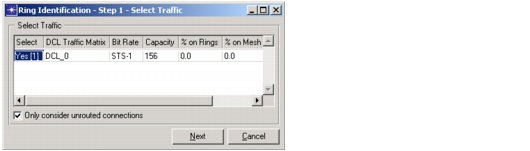
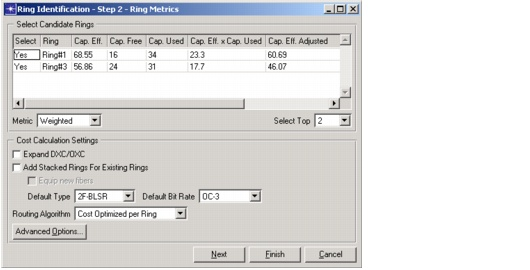
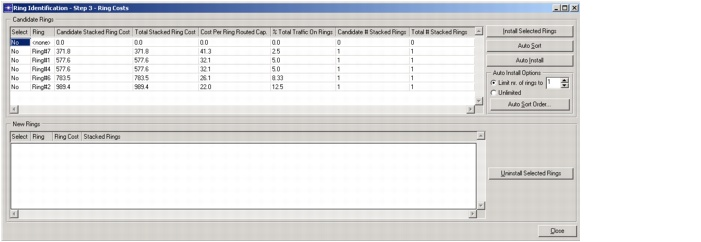
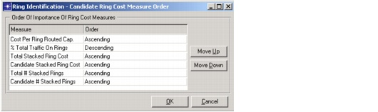

Ring Design > Ring Identification > Workflow Description
Workflow Description
The following steps outline the high-level workflow.
Procedure 12-2 Ring Identification
- From the main menu in the Project Editor, choose Design > Ring Identification.
The "Ring Identification - Step 1 - Select Traffic" dialog box appears.
- Select traffic matrices by clicking in the "Select" column. For more information about the options in this dialog box, see Ring Identification, Step 1: Select Traffic Matrices.
- Select the traffic matrices that you wanted the identified rings to support, then click Next.
The "Ring Identification - Step 2 - Ring Metrics" dialog box appears.
This dialog box prompts you to select the candidate rings for which you want to calculate the cost. The Select Candidate Rings table includes metrics that enable you to select the most suitable candidate rings for routing the selected traffic. These metrics are derived from the routes of each connection when it is routed along its shortest path.
For more information about the options in this dialog box, see Ring Identification, Step 2: Select Candidate Rings and Routing Metrics.
- Select the candidate rings and cost calculation settings.
- If you are ready to install the existing candidate rings, click Finish. If you want to refine the ring list using more detailed cost metrics, click Next.
The "Ring Identification - Step 3 - Ring Costs" dialog box appears.
This dialog shows the additional stacked ring cost and other metrics for each candidate ring when it is added to the network. You can use these calculations to determine the most suitable candidate rings and the order in which they are installed in the network.
For more information about the options in this dialog box, see Ring Identification, Step 3: Inspect Ring Costs and Install Candidate Rings.
- After you specify the list of candidate rings, click Install Selected Rings or Auto Install.
- Click Close to exit the Ring Identification wizard.
- Use Ring Dimensioning to set up traffic on the existing and new rings.
End of Procedure 12-2
Ring Identification, Step 1: Select Traffic Matrices
This dialog box appears when you choose Design > Ring Identification in the Project Editor. In this dialog box, you select the traffic matrices used to identify candidate rings—specifically, the candidate rings that are most likely to support the traffic in these matrices.
Figure 12-11 "Ring Identification - Step 1 - Select Traffic" Dialog Box

Ring Identification, Step 2: Select Candidate Rings and Routing Metrics
This dialog box appears when you click Next in the "Ring Identification - Step 1 - Select Traffic" Dialog Box. In this step, you select the candidate rings for which you want to calculate the cost. The Select Candidate Rings table includes metrics that provide an initial estimate of how much traffic can be routed on each candidate ring. The metrics are derived from the routes of each connection when it is routed along its shortest path.
When you change the Metric, the metrics in the Select Candidate Rings table are updated automatically. To sort the rings based on a specific metric, click in the column header (for example, "Cap Eff." or "Cap. Used").
After you select the best candidate rings (click in the Select column or use the Select Top menu), you can do one of the following:
- To convert the selected Candidate rings to New rings and finish Ring Identification, click Finish.
- To further refine the list of candidate rings (by performing a detailed cost calculation) and to select the order in which they are installed, click Next and proceed to Ring Identification, Step 3: Inspect Ring Costs and Install Candidate Rings.
Figure 12-12 "Ring Identification - Step 2 - Ring Metrics" Dialog Box

Ring Identification, Step 3: Inspect Ring Costs and Install Candidate Rings
The "Ring Identification - Step 3 - Ring Costs" Dialog Box appears when you click Next in the "Ring Identification - Step 2 - Ring Metrics" Dialog Box. In this final step, you can narrow down the list of rings you want to install by applying more detailed ring-cost calculations to the list of rings you created in the previous step. Then you can install the selected rings (that is, convert the candidate rings to new rings).
The following steps outline the workflow in this dialog box:
- If the Candidate Rings table shows one or more rings that you do not want to install, set the Selected fields to No in the Candidate Rings table.
- Sort the candidate rings in the Candidate Rings table according to one or more cost metrics (percentage of total traffic, cost per ring, and so on). To sort the table automatically, click Auto Sort Order, specify the sort criteria, and click Auto Sort.
After you select and sort the candidate rings, you are ready to install them. You can install the rings manually or using the Auto Install feature.
- To install the rings manually—that is, to install all selected rings in the order in which they appear in the table—click Install Selected Rings.
- If you install the rings using Auto Install, SP Guru Transport Planner installs the candidate rings as described in Auto Install: Algorithm Description. To install the rings using Auto Install, specify the ring threshold if desired (under Auto Install Options) and click Auto Install.
Auto Install: Algorithm Description
The Auto Sort function installs rings using the following algorithm:
- Calculate cost measures for the list of selected, uninstalled candidate rings.
- Install the best candidate ring, based on the criteria specified in the "Candidate Ring Measure Order" Dialog Box.
- Stop if either of the following conditions is true:
- Installing additional rings results in no increase in the percentage of total traffic on the rings or reduction in the total stacked ring cost
- The number of installed rings in the New Rings table equals the threshold specified in the Auto Install Options.
- Otherwise, return to step 2.
Figure 12-13 "Ring Identification - Step 3 - Ring Costs" Dialog Box

- Ring Cost—Cost for the stacked rings that would be added to the New Ring if traffic was to be routed on it, for the case of routing traffic on existing legacy and new rings only (without adding any candidate rings)
- Stacked Ring—The number of stacked rings that would be added on the New Ring if it were to be used for routing traffic on the set of rings formed by legacy and new rings only (without adding another candidate ring)
"Candidate Ring Measure Order" Dialog Box
This dialog box appears when you click Auto Sort Order in the "Ring Identification - Step 3 - Ring Costs" Dialog Box. Here you can specify the criteria used by the Auto Install algorithm to determine the best candidate ring to install in each iteration.
Figure 12-14 "Candidate Ring Cost Measure Order" Dialog Box

| Home © 1987-2007 OPNET Technologies, Inc. All Rights Reserved. This software may be covered by one or more U.S. Patents. See complete patent notice in the Legal Notices section. OPNET Support Center |